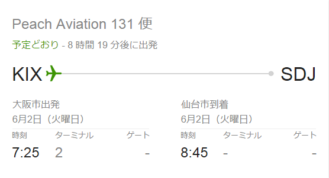
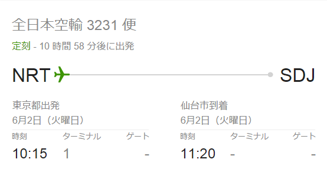
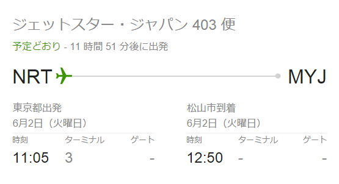
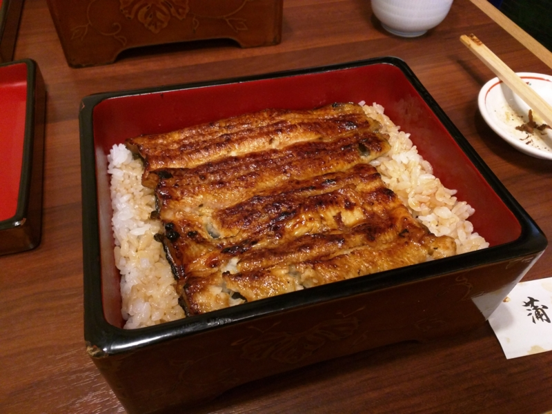

松山から仙台へ行くために、まず東京へでる。
公開日：
先週は @bonprosoft 君たちが主催しているサトヤ＋プロ生の勉強会＠仙台に出席。
ぺろぺろ〜
— ぼんぷろ (@bonprosoft) 2015, 6月 1仙台では温かい歓迎を受けて、ちょっとうれしかった。
――でも、今日はその話じゃない。
愛媛・松山から宮城・仙台へは飛行機の直行便がない。そのため、関西・伊丹か成田・羽田で乗り換える必要がある。正規運賃だとだいたい片道 50,000 円ぐらい、旅割を駆使しても 25,000 円はかかる。かといって、お安く LCC を使おうと思うと、かなり行き方が制限されてしまう。
方法その① 関西 → 仙台でピーチを使う。松山 → 関西をなんとかする

関空 7:25 発の仙台行き APJ131 便に乗る（8:45 着！！）。そのためには 6:50 ぐらいには関空でチェックインを済まさなければならないが、始発の特急に乗って松山を出ても間に合わない。東予 → 南港のオレンジフェリーを使えば南港に 06：10 着だが、1時間弱で関空へたどり着くのは恐らく無理だろう。もし実現できれば、松山 → 仙台を 15,000 円ぐらいで行けるのだが。
というわけで、どうしても前日に大阪で宿泊しなければならず、宿代を考えると LCC に乗る意味があまりない。よってこの案は没。朝に関空へ着く高速バスがあればかなり有力な手段になるが、わしはバスが嫌いなのでこれも没。
ちなみに、帰りはピーチを乗り継いで 仙台（MM136、15:15～16:50）→ 関西（MM309、19:15～20:05） → 松山 と帰ることができた。これだと運賃は 10,000 円ちょっとぐらいで済む。日によっては MM136 が運休になるようなのでちょっと注意が必要だけれども。
方法その② 松山 → 成田でジェットスターを使う。成田 → 仙台をなんとかする

土日ならば松山 06:10 発の GK401 便が使える。成田着は 07:50 なので、ANA 3231（成田発 10:15、仙台着 11:20）に乗り換えれば間に合う。成田 → 仙台は正規料金で 20,740 円。
一方、新幹線を使えば、成田までの京成線の料金を入れて 12,000 円ぐらい。旅割を使えば、飛行機も新幹線も運賃は変わらないかな？ 飛行機は乗り継ぎに2時間ほどかかるので、どっち使っても到着時刻はほとんど同じ。スケジュールの柔軟性を考えれば（飛行機は最悪飛ばないこともある。仙台空港は霧が多いそうで遅延・欠航は割とある）、成田 → 仙台は新幹線をチョイスするのがベストだと思う。
運賃は計 20,000 円弱。朝早く家をでないといけないけれど、これはかなり有力な方法に思える。

ただし、 GK401 便は土日のみ。平日は GK403 便が一番早い便になるので無事死亡。どうやっても午前中には着かない。
浮いたお金で
ま、そんなこんなであれこれ方法を考えたんだけど、結局、木曜日の晩のジェットスターで成田まで飛んで（金曜日の晩より安いので）千葉・市川の実家で泊まり、土曜日の朝に新幹線で仙台へ向かうことにした（運賃20,000円ぐらい）。こういうのを毎回考えるのは面倒だし、飛行機の乗り継ぎをサクッと検索できるサービスほしいなぁ……なければ作るか。

というわけで、金曜日は東京を楽しんだ。昼は @shibayan に教えてもらった本所吾妻橋の鰻屋さんでランチした。しかも特上！ ちょっとあっさり目のタレに、ウナギの身がホクホク！ ビールの突き出しに鰭（ひれ）焼き？までいただいて、感服仕った。
晩は小岩で馴染みの顔と飲んだ。とくに N ちゃんにお土産のお酒までもらってしまって……。ありがとうございますダ。久しぶりにハメ外して飲みまくってしまった。他にも会いたい人はいっぱいいたけれど、まぁ、それはまた今度。
それにしても、フラっと東京に出て、メシくったり、サケがのめる知り合いに恵まれているのって割と幸せですね。しかもみんな奢ってくれるっていうし（なんだかんだで結局、自分でちゃんとお金出したけど）。もし松山にくることがあれば、ぜひ声をかけてください。いつでも出撃します！